受众：业务部门关键角色 / 产品岗 / 普通用户 版本：v1.15.0（2026-05-08） 访问地址：
http://172.16.0.138:3001（公司内网）
业务全景图 是一个团队内部使用的可视化业务流程协作工具，让产品和业务部门一起把"我们公司怎么干活的"画成一张可以多人协作、可以版本追溯、可以批注讨论的活文档。
这本手册写给谁：
这本手册不写：
如果你需要这部分内容，请联系项目管理员或开发同学。
如果你是第一次用这个工具，先花 3 分钟读完这节——后面所有功能、按钮、提示，都建立在"三种画布"的概念之上。
你的浏览器 服务器（内网 172.16.0.138）
┌──────────────────┐ ┌──────────────────────────────────┐
│ 本地草稿 │ │ 主版本画布 │
│ （仅你能看到） │ │ ├─ 私有画布（仅作者 + admin） │
│ │ ──保存──→ │ └─ 公共画布（所有登录用户都能看）│
│ 服务端草稿 │ │ │
│ （仅你能看到， │ │ │
│ 每 30s 自动存） │ │ │
└──────────────────┘ └──────────────────────────────────┘
| 类型 | 谁能看 | 谁能改 | 怎么产生 |
|---|---|---|---|
| 本地草稿 | 仅你自己 | 仅你自己 | 没登录或者刚登录看到的初始空画布 |
| 服务端草稿 | 仅你自己 | 仅你自己 | 你打开服务端画布开始改后，每 30s 自动存（不影响主版本） |
| 私有画布（private） | 作者 + admin | 作者 + admin | 你点"另存为新画布"创建出来的 |
| 公共画布（public） | 所有登录用户 | 所有登录用户都能编辑（详见 §0.5） | admin 把私有画布"发布"成公共 |
一句话总结：
公共画布是多人协作画布——任何登录用户都能加节点 / 改自己加的节点 / 加批注，但不能改别人的、也不能物理删节点 / 删整个画布。详细矩阵：
| 操作 | 你（普通用户）能做？ | admin 能做？ |
|---|---|---|
| 加新节点 | ✅ | ✅ |
| 改你自己加的节点 | ✅ | ✅ |
| 改别人加的节点 | ❌ 服务端会拒绝 | ✅ |
| 物理删节点（彻底移除——含自己刚加的已保存节点） | ❌ 仅 admin（详见下方说明） | ✅ |
| 标废弃节点（半透明保留历史，不删） | ✅ 任何人都能标 | ✅ |
| 加批注 | ✅ | ✅ |
| 关闭别人的批注 | ❌（仅批注作者可关闭） | ✅ |
| 删整个公共画布（归档） | ❌ 仅 admin | ✅ |
| 发布 / 取消发布 | ❌ 仅 admin | ✅ |
设计原则：协作友好 + 历史可追溯 + 不可破坏。 你能加 / 改自己 / 标废弃，但不能动别人的、不能彻底抹掉痕迹——保护团队的协作历史。
关于"物理删自己加的节点"的特殊说明：
- 节点保存到主版本之前（你刚拖出来还没自动保存）→ ✅ 可以删（用 Delete 键 / 撤销，合理的"刚拖错了"场景）
- 节点保存到主版本之后 → ❌ 即使是你自己加的也不能再删
为什么自己加的也不能删？ 假设你（A）加了节点【F1】，同事（B）顺着【F1】又添加了【F2】【F3】（连线接在 F1 后）。如果你后悔删掉【F1】，B 加的【F2】【F3】就会悬空——破坏团队协作。 替代方案：用【标废弃】（半透明保留 + 角标"已废弃"），后续业务流程不再走它，但历史不丢；或者请 admin 协助物理删除。
Q：我画了好久没点保存，关了浏览器会丢吗？
A：不会。改完 30 秒会自动存为草稿。下次进来会问你"要不要恢复草稿"。
Q：我做的私有画布，别人能看到吗？
A：看不到。私有画布 = 仅你和 admin 能看。
Q：公共画布我能加节点 / 改东西吗？
A：能加节点、改你自己加的节点、加批注。但不能改别人加的节点、不能物理删节点——服务端会拒绝。想"删"别人加的节点？用【标废弃】（半透明保留，不真删）。详见 §0.3 权限矩阵。
Q："主版本"是什么意思？跟草稿什么关系？
A：主版本 = 正式存档，别人能看到的就是主版本。草稿 = 你"还没决定要不要正式存"的临时存稿，只有你自己能看。
Q：私有画布怎么变成公共画布让团队都能看？
A：找 admin。admin 在后台点"发布"按钮就行。
Q：我能不能把整个公共画布删掉？
A：不能。普通用户对公共画布的"归档（软删）"权限是关闭的——只有 admin 能归档公共画布。这是为了防止误操作让团队画布从所有人列表里消失。
一句话定义：把业务流程画成可协作的可视化流程图工具。
典型使用场景：
它不是什么：
http://172.16.0.138:3001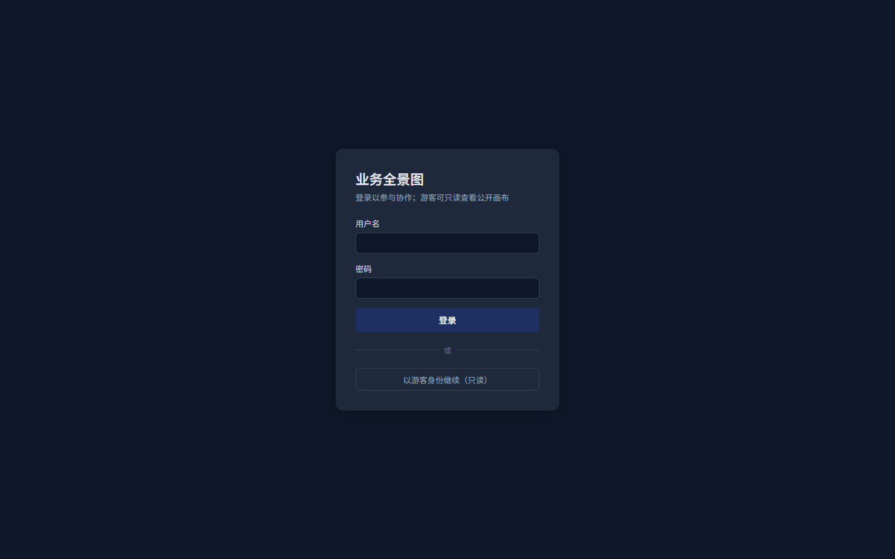
首次登录：你看到的可能是空白本地草稿 + 一个引导卡片"在右上角’另存为新画布’把当前草稿保存到服务器"——这是正常的，你还没有自己的画布。继续看 §1.4。
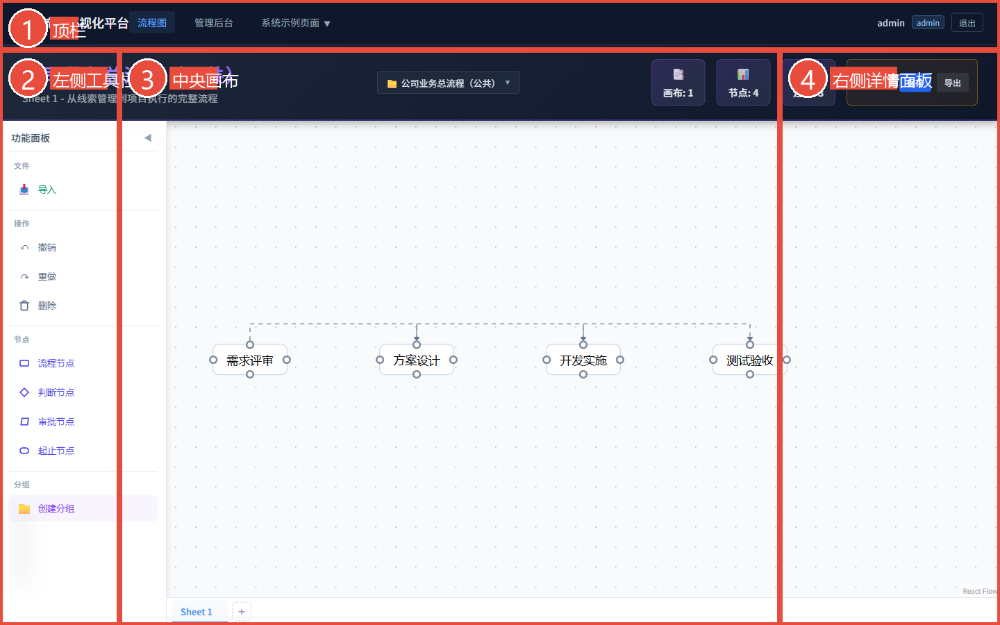
界面分三个常驻区域 + 一个抽屉式面板：
此外，画布底部有 Sheet 标签栏（一个画布可有多个工作表，类似 Excel 的 sheet 切换）。在公共画布底部加新 sheet 分页 = 加在同一个公共画布里 = 对所有人可见（不是新建私有画布，详见 §3.7 场景 G）。
怎么打开右侧详情面板？ 单击任何画布上的节点（流程节点 / 判断节点 / 审批节点 等），抽屉自动滑入。再次单击同一节点关闭。
| 你是谁 | 推荐第一次的操作路径 |
|---|---|
| 产品 / 业务部门，刚拿到账号 | 路径 A：先点顶栏画布切换器看看团队有哪些公共画布 → 浏览熟悉工具，可以试着加批注或加节点参与协作 |
| 要画自己的流程图（不发给团队） | 路径 B：直接在空白草稿上画 → 画完点"另存为新画布"变成你的私有画布 |
| Admin 想发布给团队看 | 先按路径 B 画，再去 admin 后台"发布"成公共画布 |
重点：公共画布是多人协作画布——任何登录用户都能参与编辑（加节点、加批注、标废弃），不只是浏览。详见 §0.3 + §3.7。
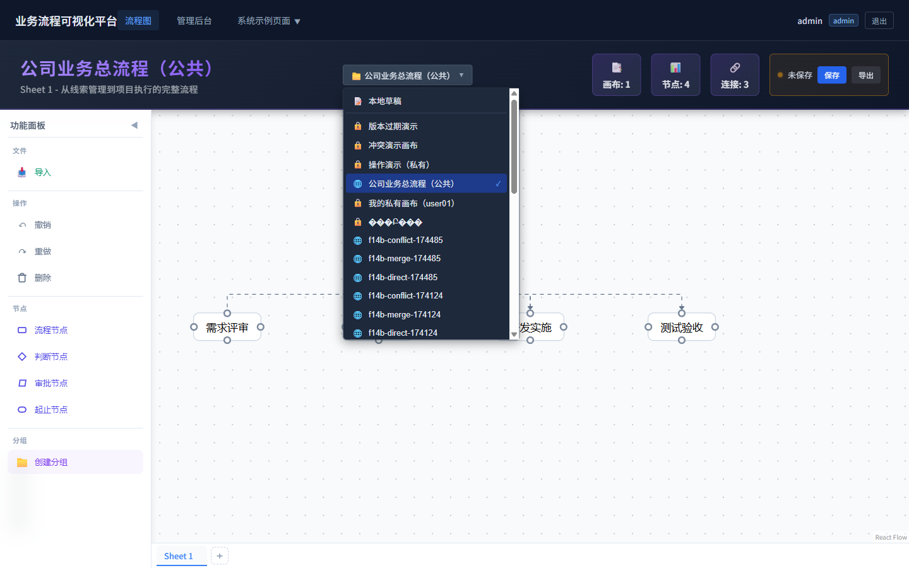
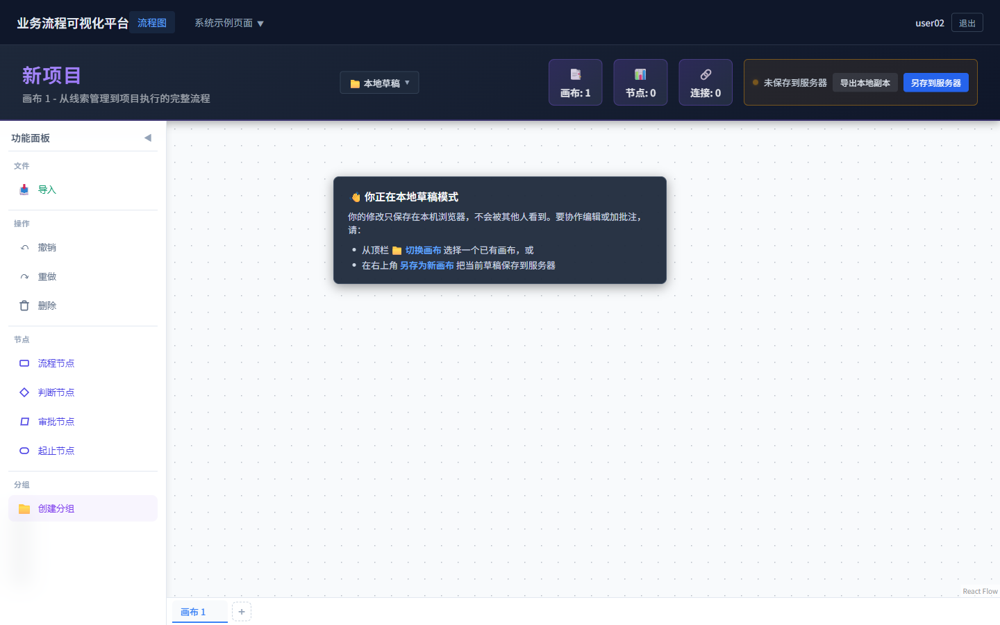
画到一半要走？ 不用担心。改了 30 秒就会自动存草稿。下次进来会问你恢复不恢复。
添加节点：左侧功能面板"节点"分类下，把图标拖到画布上（流程节点 / 判断节点 / 审批节点 / 起止节点 四类）。
打开节点详情：单击节点 → 右侧抽屉滑入（详情 / 批注两个 Tab）。
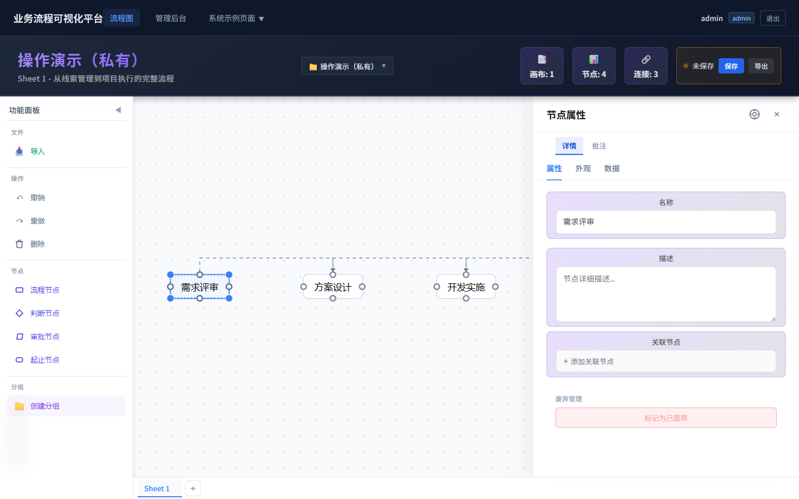
改节点名（两种方式）：
移动节点：拖动即可。
复制 / 粘贴节点：Ctrl+C → Ctrl+V。注意：粘贴出来的节点是新 ID，跟原节点是不同的两个节点。
删除节点：选中 → 按 Delete 键。
注意：单击和双击是不同操作——单击开抽屉，双击进入节点名编辑。点错了按 Esc 取消。
连两个节点：
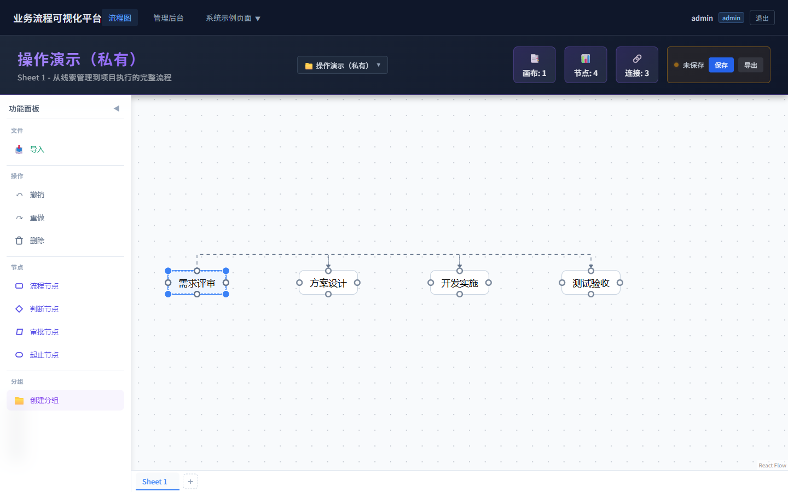
改边的标签：双击边 → 输入文字（比如"通过"/“驳回”）。
删除边：选中边 → 按 Delete 键。
分组用来把"逻辑相关"的节点框在一起，比如"采购流程"、“审批流程”。
新建分组：
进出分组：把节点拖进分组框 / 拖出分组框 → 自动加入 / 移出。
删除分组：
Delete 键子流程节点是一个特殊节点——双击它，会"钻进去"看更细的流程。
用途：流程太复杂时，把一部分细节折叠成子流程节点，主图保持简洁。
钻入：双击子流程节点 → 进入子流程画布。
返回上层：左上角面包屑导航点回去。
注意：当前版本子流程为只读展示用途；详细使用方法可咨询管理员。
批注用来在节点上加讨论 / 提问 / 标记，类似"便签"。
添加批注：
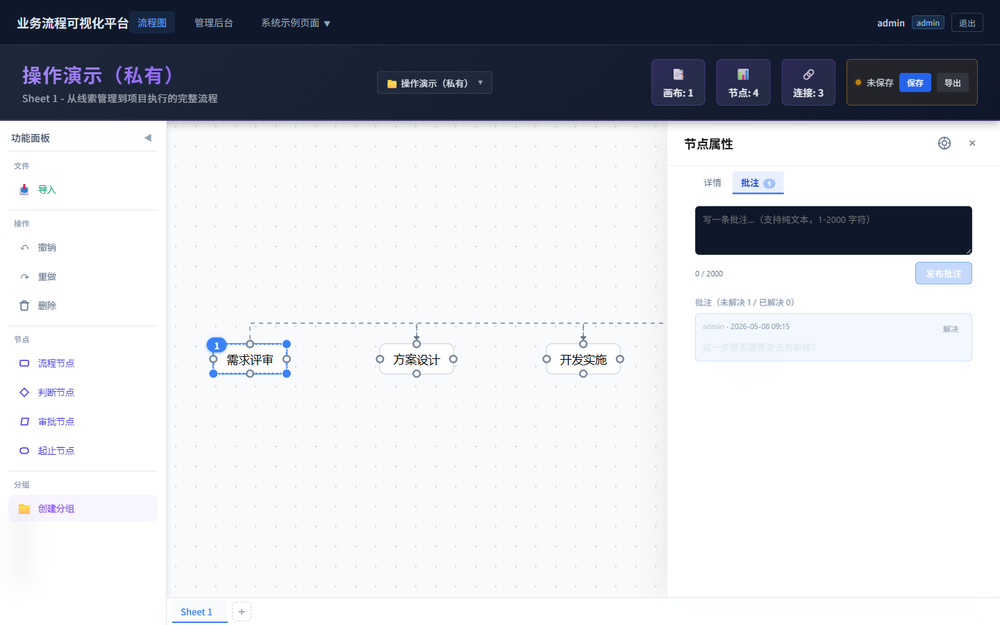
节点上的批注角标：节点上有未解决批注时，会显示一个蓝色数字徽章（数字 = 未解决批注数）。
批注的状态：
谁能关闭批注：批注作者本人 / admin（即使该画布是别人创建的）。
批注是按节点绑定的——节点删了，批注一起删；节点 ID 变了（比如复制粘贴产生的新 ID），批注不会跟着。
画布工具栏右上角的保存按钮，会根据状态自动变化：
可能的状态文案（按情况显示其中一种）：
| 状态 | 含义 | 你要做什么 |
|---|---|---|
| ✓ 已保存（刚刚 / N 秒前） | 已经存到主版本，别人能看到 | 不用管 |
| ● 未保存 | 你改了但还没保存到主版本 | 想让别人看到你的改动？点【保存】按钮 |
| 保存中… | 服务器处理中 | 等一下，别关浏览器 |
| 草稿已保存 14:23 | 改动已自动存为草稿（仅你能看） | 30 秒一次自动存，不用管 |
上图展示的是"未保存"态——能看到红点 + 文字"未保存" + 蓝色【保存】按钮。点保存后会变成"已保存（刚刚）"+ 绿色对勾。
几个重要说明：
| 操作 | 用途 |
|---|---|
| 保存（已挂接画布） | 把改动写入当前画布的主版本 |
| 另存为新画布 | 创建一个新的画布，当前内容作为新画布的初始版本（不影响原画布） |
新用户第一次画完一定要点"另存为新画布"——否则你画的东西只在本地草稿里，换台电脑或清浏览器缓存就丢了。
导出：
导入：从本地 JSON 文件还原成画布——常用于从备份恢复或跨环境迁移。
小贴士：真冲突无法解决时（详见 §3.5.3），可以先"导出当前内存版本"作为备份，再做后续操作。
某个流程或节点不再使用了，但又想保留历史痕迹？用"标记废弃"。
| 操作 | 效果 |
|---|---|
| 标记废弃 | 节点变半透明 + 角标"已废弃" + tooltip 说明，但不删除（追溯历史用） |
| 删除 | 彻底从画布上移除，不可恢复（除非从历史版本恢复） |
怎么标记废弃：
本节是 v1.15.0 重点功能——团队同时编辑同一画布时如何协作。
本系统采用"保留本地改动 + 服务端尽力合并 + 真冲突时友好提示"的设计。几乎不会丢数据，但你要理解几个关键提示。
回顾权限矩阵（详见 §0.3）：
公共画布上的"用户加的节点"自动绑定 creator_id（创建人 ID），后续如果别人想改你加的节点，服务端会以 creator_id 为依据拒绝——保护你不会被别人覆盖改动。
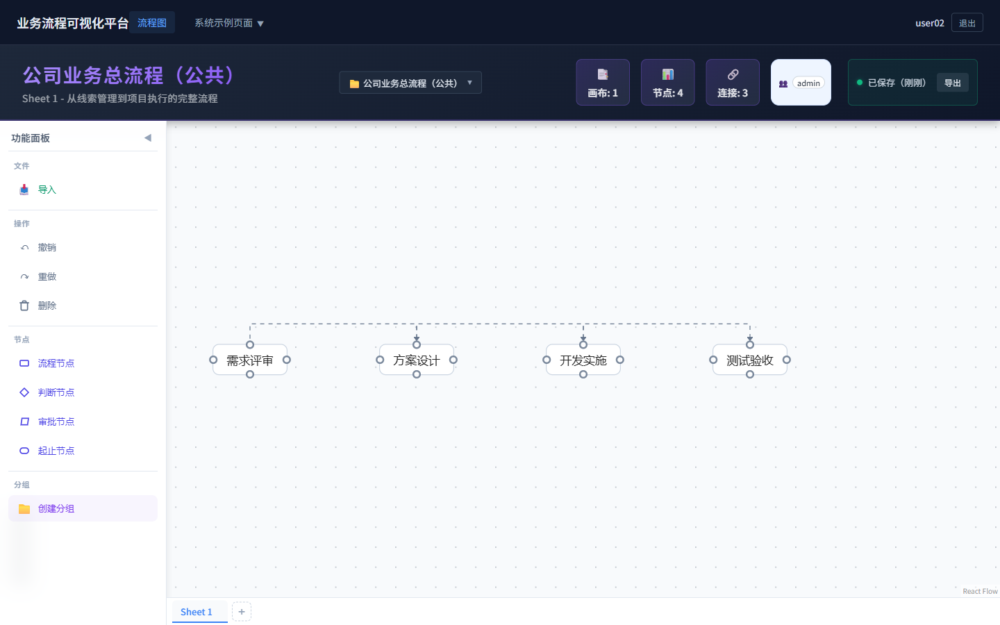
注：上图截图取自单浏览器视角；不同用户登录后看到的实际"哪些节点能改 / 哪些不能改"是按 creator_id 区分的。
想画基于公共画布的私人版本？ 进入公共画布会弹警告，点【📋 复制为我的私人画布】或顶栏【📋 复制为私人】按钮即可，详见 §3.7 场景 B。
画布工具栏会显示一个 👥 X 人在编辑 角标，告诉你谁也打开了这个画布。
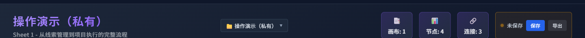
重要：
注：上图中如果没看到"👥 X 人在编辑"，是因为截图时只有 1 个用户在编辑（角标 0 人不显示）。多人同时打开时会自动出现。
你改画布后，每 30 秒自动存草稿（不写主版本，只是你的临时存稿）。
草稿保存失败时的提示：
- “草稿过大（超 2MB），请简化画布” → 删除一些不必要的节点 / 边 / 详情字段
- “草稿数已达上限（200），请清理” → 联系管理员或者主动保存几个画布的主版本
重新打开有未提交草稿的画布，会弹出对话框：
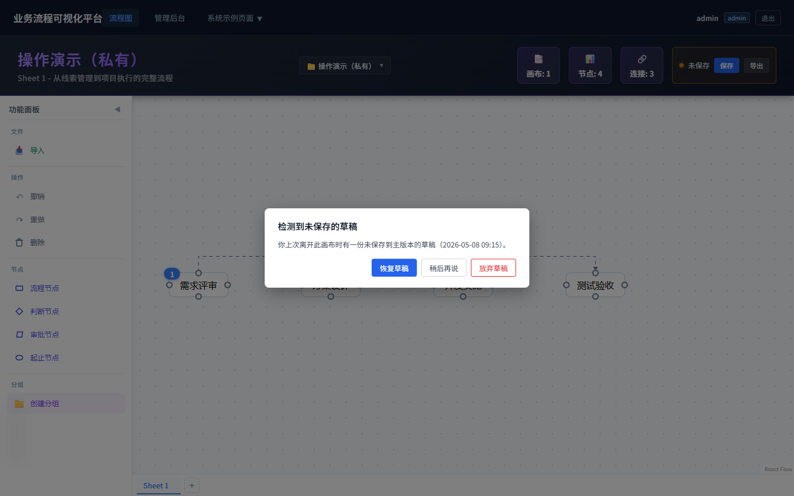
三个选项：
| 按钮 | 效果 |
|---|---|
| 恢复草稿 | 用草稿替换当前画布——你之前没保存的改动回来了 |
| 稍后再说 | 关闭弹窗，但草稿还在——下次打开还会弹 |
| 放弃草稿（红色按钮） | 删除草稿，加载主版本——不可恢复 |
草稿基于过期版本时的⚠️警告：
如果你的草稿基于版本 v3，但主版本已经被别人推到 v5，对话框会显示一条警告：
此草稿基于版本 v3，但主版本已被他人更新到 v5。如果恢复后保存，服务端会拒绝（要求基于最新版本）。建议先导出草稿备份再决定。
应对：先点"恢复草稿"再立即"导出当前内存版本"备份成 JSON，然后决定是丢弃自己的草稿还是手工合并。
你改 → 别人没改 → 保存成功 → 顶栏显示 ✓ 已保存 N 秒前。
你改了节点 A，别人改了节点 B → 服务端自动把两边的改动合在一起 → 你看到顶栏弹出 Toast 提示：
已为你合并对方的改动
不需要你做任何事，画布已经是合并后的状态。
假设公共画布初始是【需求 → 设计 → 开发】（v=1）。
| 时间 | 用户 A 操作 | 用户 B 操作 | 服务端版本 |
|---|---|---|---|
| t1 | 打开画布，看到 v=1 | 打开画布，看到 v=1 | v=1 |
| t2 | 加【测试】节点（连在【开发】后） | 加【部署】节点（连在【开发】后） | v=1 |
| t3 | 点【保存】 | （还在改） | v=2（A 的版本：含【测试】） |
| t4 | （已保存） | 点【保存】 | v=3（自动合并：含【测试】+【部署】） |
最终结果：公共画布 v=3 上两人加的节点都在——【需求 → 设计 → 开发 →【测试】+【部署】】。
B 浏览器的反应：
这就是"自动合并"的魔法——只要你们加的是不同的东西，系统帮你合并；不需要约时间错峰开。
自动合并能 cover 哪些操作：
| 你的动作 | 对方的动作 | 自动合并？ |
|---|---|---|
| 加节点 X | 加节点 Y | ✅ |
| 改节点 X 的名字 | 改节点 Y 的描述 | ✅ |
| 改节点 X 的名字 | 改节点 X 的位置（不同字段） | ✅ |
| 加批注 | 改节点（不冲突） | ✅ |
| 加节点 | 标废弃别的节点 | ✅ |
| 改节点 X 的名字 | 改节点 X 的名字（同字段） | ❌ 真冲突，弹窗见 §3.5.3 |
你和别人改了同一个节点的同一个字段（比如都改了节点 A 的名字）→ 服务端无法判断要谁的 → 弹出对话框：
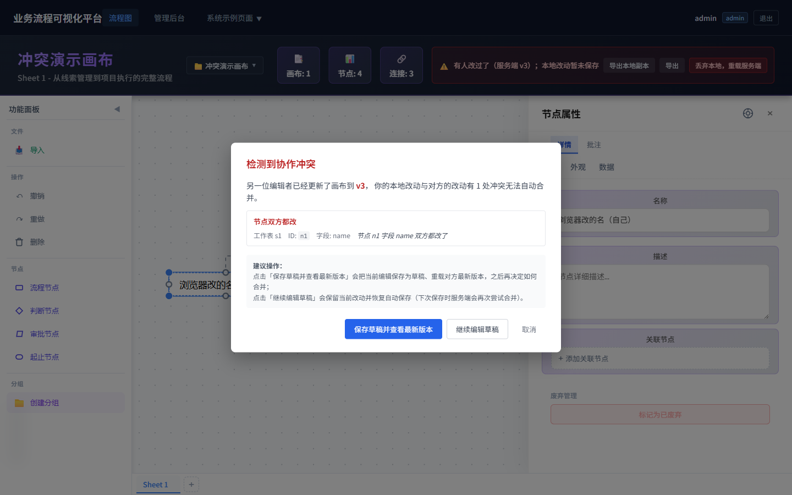
对话框显示：
两个选项：
| 按钮 | 效果 | 推荐场景 |
|---|---|---|
| 保存草稿并查看最新版本（蓝色主按钮） | 把你的改动存为草稿 + 重载对方最新版本 → 你可以看到对方改了什么，再决定如何手工合并 | 多数情况推荐用这个——零丢失 |
| 继续编辑草稿 | 保留你的改动，不重载——下次保存时服务端会再尝试合并（可能再次冲突） | 你确定要坚持自己的版本时用 |
绝对不要：
- 看到冲突弹窗就 F5 / 关浏览器（草稿可能还没存，会丢改动）
- 慌乱中乱点——先看清楚冲突的是哪个节点的哪个字段
你打开了一个画布很久没动 → 别人改了很多次 → 你点保存 → 可能弹出对话框"画布历史版本已超出可合并范围"。
意思：服务器为了节省空间，清理了你打开时的那个旧版本快照——服务端无法基于"那个旧版本"做合并了。
对话框上的两个按钮：
| 按钮 | 效果 |
|---|---|
| 保存草稿后重载（蓝色主按钮） | 先把你的改动存为草稿 + 重载最新版本（推荐） |
| 留在草稿 | 不重载，自动保存暂停——你需要手动刷新页面才能继续 |
怎么避免：长时间不动的画布，每隔半小时点一次保存（哪怕没改东西，刷新一下页面也行）。这个对话框在内网 5 人协作场景下很少出现，遇到时按上面操作即可。
不同场景下的操作路径——找到你的场景，照着做。
注意：你不能改别人加的节点，也不能物理删节点。如果你想"删"别人加的，请用【标废弃】（半透明保留历史，不真删）。
为什么有警告弹窗？公共画布上的修改自动保存且对所有人可见，且节点一旦加上普通用户不能删。所以系统建议你"先复制到私人副本上排练"再决定要不要直接编辑（场景 B）。
两种入口都可以：
入口 1（推荐，加载即引导）：进入公共画布弹警告时，点【📋 复制为我的私人画布】→ 起个名字（默认「原名 - 副本」）→ URL 自动跳到新私有画布
入口 2（已经在画布里）：顶栏点【📋 复制为私人】按钮（只在普通用户 + 公共画布 + 已挂接服务端时显示）→ 起个名字 → 跳新画布
复制后：
适合场景：调研后想画"现状 vs 目标"两版对比；探索一个改进方案但不想干扰团队主流程；或者只是想在私有空间试探性地改一改。
当前应用没有"自动合并到公共画布"按钮。三条路：
| 方式 | 操作 |
|---|---|
| C1（推荐）找 admin 帮忙 | 把你私有画布的链接发给 admin。admin 决定：(a) 直接修改原公共画布（手工对比改）/ (b) 把你的私有画布发布为新公共画布（独立的） |
| C2 自己成为公共画布的作者 | admin 把公共画布的 owner 改成你（一次性授权），你成为该画布的作者，后续可以直接编辑（含改"原本不是你加的节点"——前提是把你设为 owner 时画布会重新认定权限） |
| C3 协作直接编辑 | 既然公共画布允许多人编辑，直接打开原公共画布加节点就好——没必要先做副本再合并 |
多数情况推荐 C3：公共画布本来就是多人协作的，直接在上面加你的节点即可。C1/C2 只在你需要"先单独尝试再决定要不要发"时用。
详见 §3.5.2 的具体例子。简单说：只要你和别人加的节点不重叠（节点 ID 不冲突，没改同一个字段），系统会自动合并——你保存时顶栏弹"已为你合并对方的改动"Toast，画布上会自动出现别人加的节点。
公共画布上已保存的节点不能物理删——即使是你自己加的（保留协作历史，避免别人接在你节点上画的内容悬空）。三种替代方式：
特例：节点刚拖出来还没自动保存（30 秒内）的话可以用 Delete 直接删——这种情况是"刚拖错了/刚画错了"，不会破坏协作历史。
如果你点了删除却看到错误提示：“无法删除——公共画布上的节点只允许管理员物理删除”，是正常的；系统会自动撤销前端的删除操作（节点在 1-2 秒内会重新出现），数据安全无影响。
取消发布同款路径——【取消发布】按钮把 public 退回 private（仅作者 + admin 可见）。
仍然归这张公共画布，对所有人可见。
关键概念区分：
所以在公共画布底部加的"画布 2 / 画布 3…"分页，跟你加节点 / 改字段一样，自动保存且对所有人可见。如果你想做"个人草稿不让别人看见"的实验，请走场景 B（顶栏【📋 复制为我的私人画布】先复制到自己空间，再在副本上随便加 sheet）。
想删自己加错的 sheet？右键该 sheet tab → 删除（仅 sheet 上无节点、或你是该 canvas 的 owner / admin 时可用）。
| 快捷键 | 功能 |
|---|---|
Ctrl+S |
保存 |
Ctrl+C / Ctrl+V |
复制 / 粘贴节点 |
Ctrl+Z / Ctrl+Y |
撤销 / 重做 |
Delete |
删除选中的节点 / 边 |
| 鼠标滚轮 | 缩放画布 |
| 空格 + 拖动 | 平移画布 |
| Shift + 单击 | 多选节点 |
| 框选（按住左键拖动空白处） | 框选多个节点 |
| 术语 | 含义 |
|---|---|
| 画布（Canvas） | 一个完整的业务流程图（可以包含多个工作表）；有 public/private 可见性属性 |
| 工作表（Sheet） | 画布里的一页（类似 Excel 的 sheet）；共享所属 canvas 的可见性——公共画布上的所有 sheet 都对所有人可见 |
| 节点（Node） | 流程中的一个步骤 / 实体 |
| 边（Edge） | 节点之间的连线 |
| 分组（Group） | 把多个节点框在一起的逻辑分组 |
| 子流程（Subflow） | 可钻入查看详情的特殊节点 |
| 批注（Annotation） | 节点上的讨论 / 提问 / 标记 |
| 草稿（Draft） | 自动保存的临时存稿，仅你能看 |
| 主版本 | 服务器上正式存档的版本，别人能看到 |
| 基础版本（Base Version） | 你打开画布时的版本号——保存时服务端基于它判断有没有冲突 |
| 真冲突（Real Conflict） | 双方改了同一个节点的同一个字段，无法自动合并 |
| 自动合并（Auto Merge） | 双方改了不同节点 / 不同字段，服务端自动合并 |
具体联系人请向你的项目负责人确认。
手册版本：v1.0（2026-05-08，对应应用版本 v1.15.0）
反馈：使用中遇到问题或文档错误，请联系项目管理员。